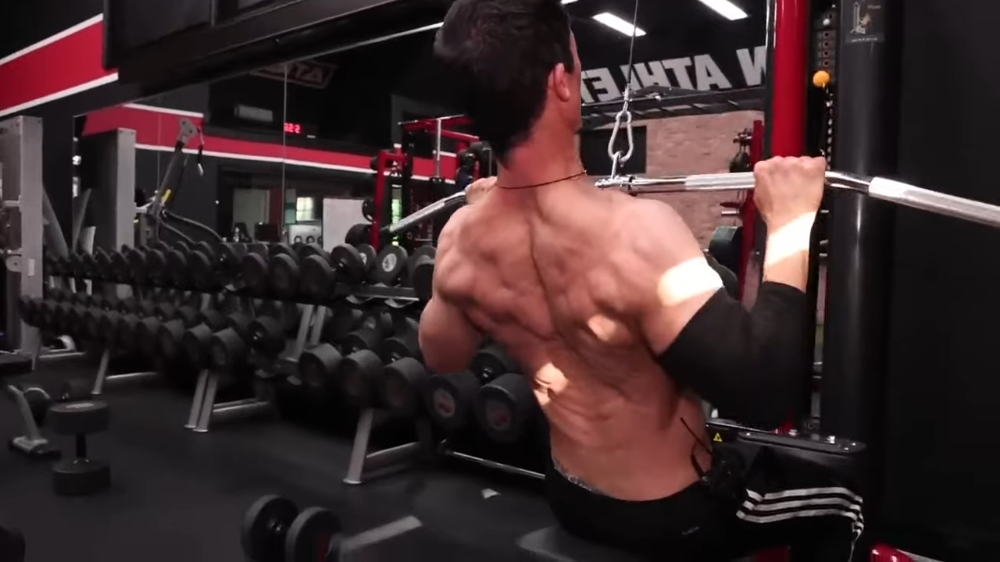
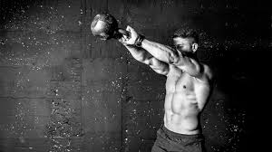

workoutroutines

Day 1 : Arms,shoulders and abs
Seated Russian twist 10 reps (10 per side)
Plank dumbbell row 10 reps (5 per side)
Dumbbell crossover punch 10 reps (10 per side)
Knee driver 10 reps (10 per side)

Day 2 : Chest and back
Bench press: 3 to 4 sets x 5 to 8 repetitions.
Chin-ups: 3 to 4 sets x 5 to 8 repetitions.
Bar dips: 2 to 4 sets x 6 to 10 repetitions (secondary) or 2 to 4 sets x 8 to 15 reps (tertiary).
1-arm dumbbell row: 2 to 4 sets x 8 to 12 repetitions.
